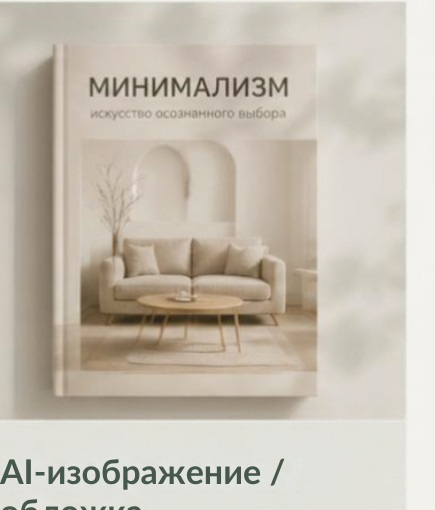
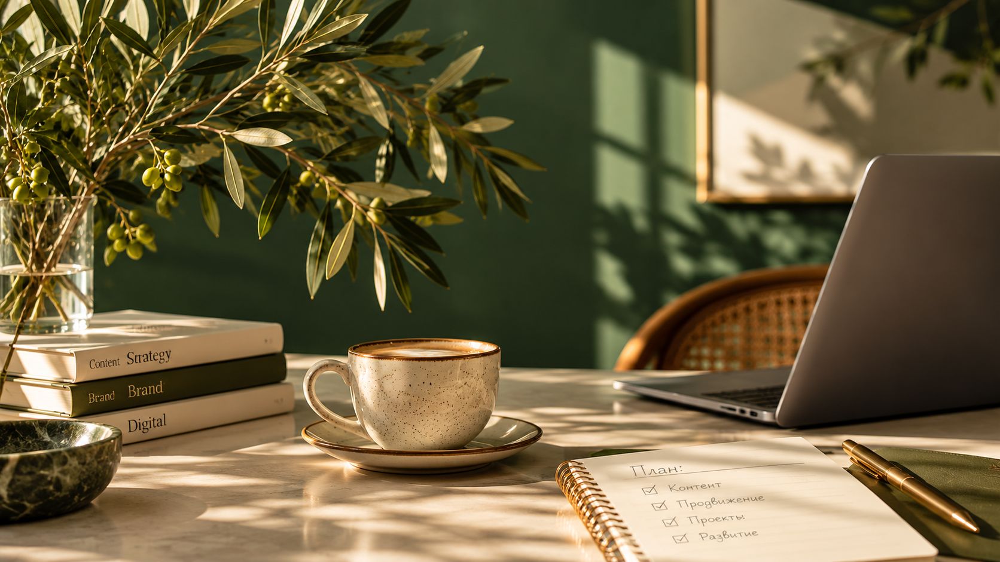
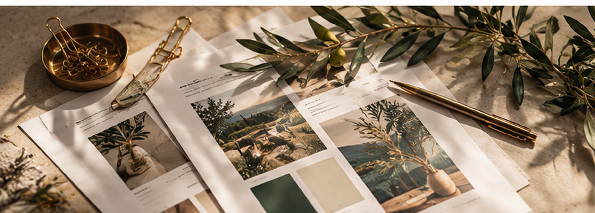
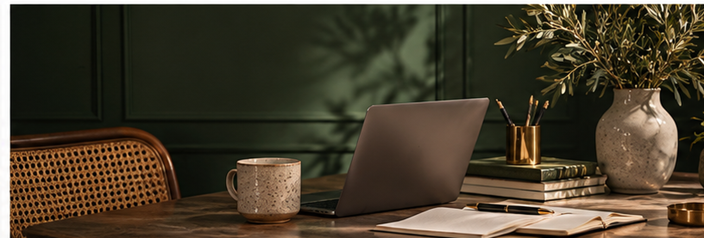
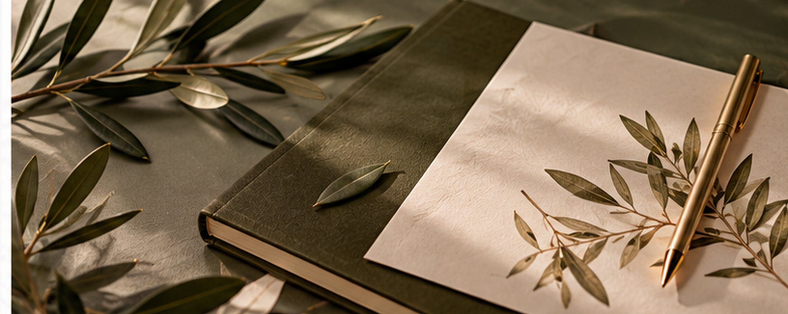
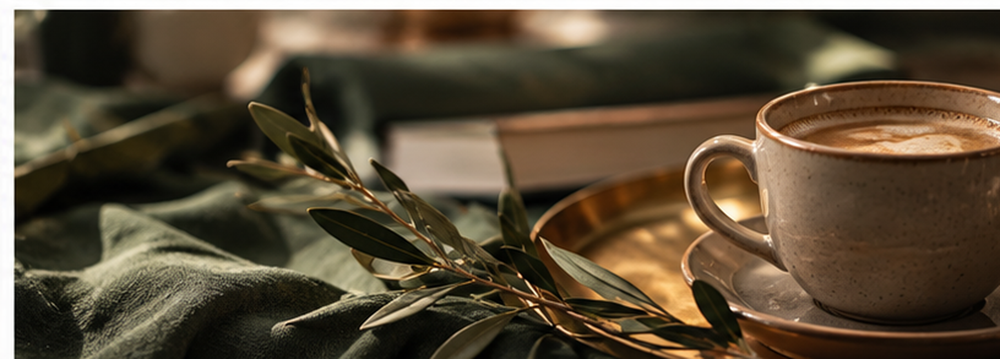
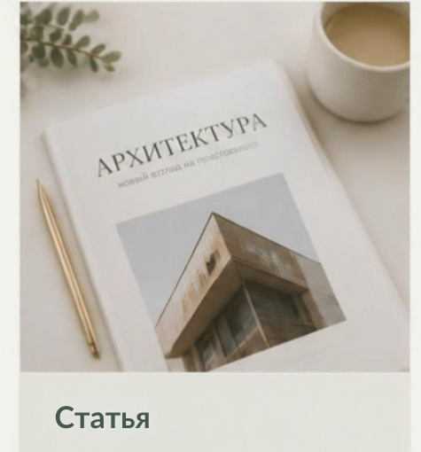
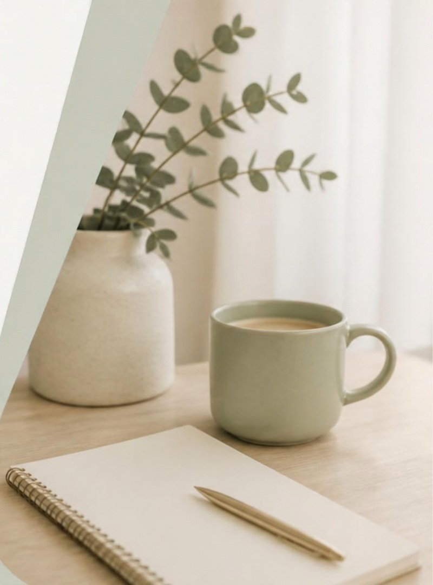

01 / AI-ФОТОГРАФИЯ
Нейрофотосессия
Создание серии образов на основе фотографии человека и визуальных референсов. Подбор стилистики, работа с композицией и сохранением узнаваемости.

Создаю визуальные и текстовые материалы для цифровых площадок — от идеи и референсов до готового контента.

Мультимедийный контент-специалист.
Работаю с цифровым контентом: создаю визуальные материалы, пишу и редактирую тексты, оформляю публикации и собираю контентные проекты.
Мне интересно соединять разные инструменты и подходы — от редакторской работы до генеративных нейросетей. Внимание к деталям, визуальная целостность и задача проекта для меня важнее эффектности ради эффектности.
Разные форматы и задачи — объединённые вниманием к образу, подаче и содержанию.

Создание серии образов на основе фотографии человека и визуальных референсов. Подбор стилистики, работа с композицией и сохранением узнаваемости.

Визуализация товаров и одежды на моделях: подбор ракурсов, сцен и образов, контроль соответствия исходному изделию.

Карточки, баннеры, обложки и графические материалы для сайтов, маркетплейсов и социальных сетей.
Генерация изображений, работа с референсами, подбор образов и контроль результата.
Товарные изображения, fashion-визуализация, контент для маркетплейсов.
Баннеры, обложки, оформление публикаций и визуальные подборки.
Копирайтинг, редактура, рерайт и материалы для сайтов.
CMS, email-контент, публикации и работа с сообществами.
Подборка графических и визуальных материалов из разных проектов.

Предметная композицияПриродная палитра
Ботанический натюрмортРабота с информацией, структурой и интонацией — от коротких публикаций до развёрнутых материалов.

Информационные и авторские материалы, адаптация сложных тем для читателя.

Работа со структурой, ясностью, стилем и точностью формулировок.
В каждом проекте важны исходные данные, понятные критерии и внимательная проверка результата.
Уточняю цель, аудиторию, формат и ограничения проекта.
Подбираю референсы, структуру, визуальный язык и варианты подачи.
Работаю с текстом, изображениями и инструментами под конкретную задачу.
Отбираю и корректирую материалы, проверяю соответствие брифу.
Открыта к проектам в сфере цифрового контента, AI-визуала, текстов и оформления материалов для онлайн-площадок.
